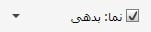
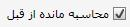

چنانچه شخص انتخابی شما در چند معین دارای گردش باشد با کلیلک بر باکس معین می توانید یکی از معین های موجود در لیست را انتخاب کنید و فقط ازگردش شخص در آن معین گزارش بگیرید.
چنانچه شخص انتخابی شما در چند معین دارای گردش باشد با کلیلک بر باکس معین می توانید یکی از معین های موجود در لیست را انتخاب کنید و فقط ازگردش شخص در آن معین گزارش بگیرید.
در صورتی که بخواهید گزارشی از گردش حساب اشخاص در سیستم داشته باشید می توانید از امکانات این فرم استفاده کنید و گزارش مربوط به هر شخص را به صورت جداگانه به چاپ برسانید.
در این صفحه شما می توانید با انتخاب شخص خاص و مشخص کردن دوره مالی و محدوده تاریخی خاص، از حساب آن شخص در بازه زمانی مورد نظر گزارش بگیرید.
با کلیک روی تهیه و چاپ حساب اشخاص شکل زیر نمایش داده می شود:

صفحه تهیه و چاپ حساب اشخاص دارای جزئیاتی است که در ادامه آن ها را شرح می دهیم:
در این قسمت می توانید از لیست اشخاص نام شخص مورد نظر خود را انتخاب کنید.
چنانچه شخص انتخابی شما در چند معین دارای گردش باشد با کلیلک بر باکس معین می توانید یکی از معین های موجود در لیست را انتخاب کنید و فقط ازگردش شخص در آن معین گزارش بگیرید.
در این صفحه می توانید مانده حساب شخص را در حالت های مختلف مشاهده نمایید.

زمانی که بازه تاریخی خاصی را انتخاب کنید، مانده حساب شخص در آن بازه تاریخی نمایش داده می شود.
 با فعال کردن گزینه لایه و انتخاب یکی از لایه های موجود در لیست لایه ها، می توانید مانده حساب شخص را در لایه انتخاب شده مشاهده کنید.
با فعال کردن گزینه لایه و انتخاب یکی از لایه های موجود در لیست لایه ها، می توانید مانده حساب شخص را در لایه انتخاب شده مشاهده کنید.

بسیار پیش می آید که یک شخص در چندین معین گردش حساب داشته باشد، مثلا بدهکاران، بستانکاران، حقوق پرداختنی و ... . می توانید هر یک از این معین ها را به صورت جداگانه و یا ترکیبی از چند معین در نمای حساب تعریف کنید تا بتوانید مانده حساب شخص را در هر یک از معین ها و یا به صورت ترکیبی در معین های دلخواه مشاهده نمایید.
در شکل بالا مانده حساب شخص در نمای بدهکاران که تنها شامل مانده حساب معین بدهکاران تجاری می باشد نمایش داده شده است.
 در صورتی که گزینه «با جزئیات» را تیک بزنید گزارشی می توانید بگیرید که جزئیات اسناد را نیز شامل شود. (اعم از ریز فاکتور خرید و فروش، جزئیات اسناد خزانه و ....)
در صورتی که گزینه «با جزئیات» را تیک بزنید گزارشی می توانید بگیرید که جزئیات اسناد را نیز شامل شود. (اعم از ریز فاکتور خرید و فروش، جزئیات اسناد خزانه و ....)
 در صورتی که باکس انتخاب بازه زمانی را فعال کرده باشیم، گزینه محاسبه مانده از قبل هم فعال می شود که مانده حساب شخص را قبل از بازه زمانی انتخاب شده در گزارش دخیل می کند.
همان طور که مشاهده می کنید در صفحه تهیه و چاپ حساب اشخاص، در صورتی که نام شخص خاصی را از لیست اشخاص انتخاب کنید، جزئیات اطلاعات شخص در پایین صفحه نمایش داده می شود.